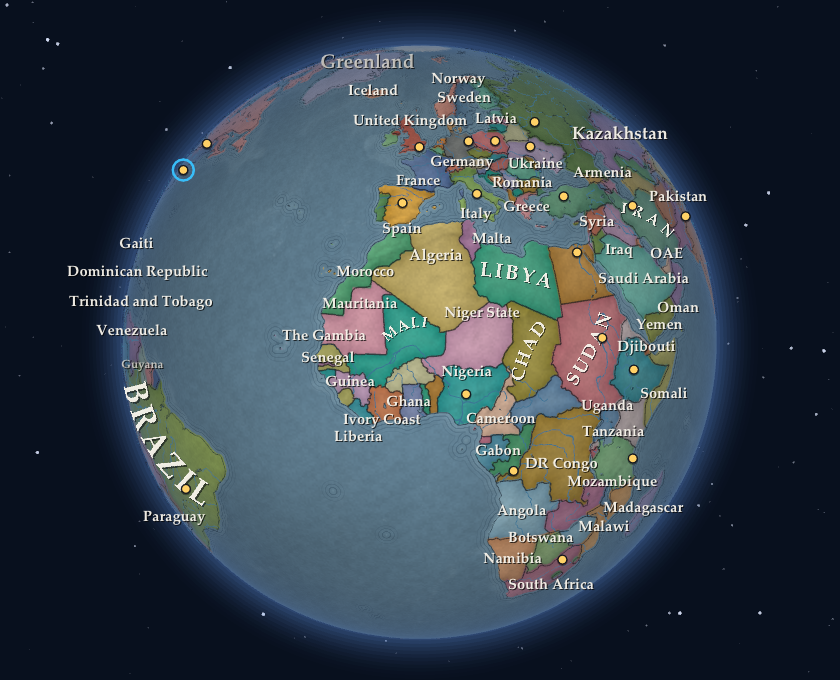
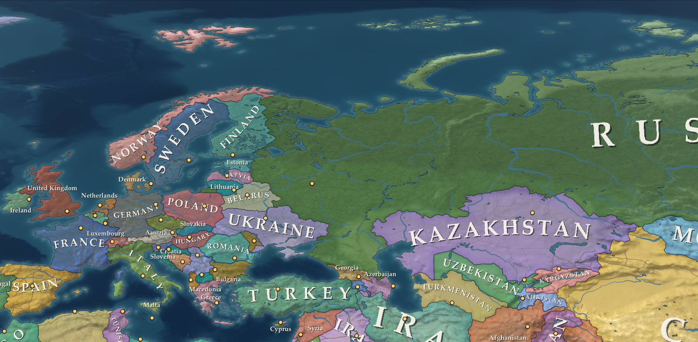
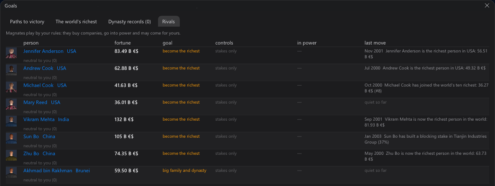
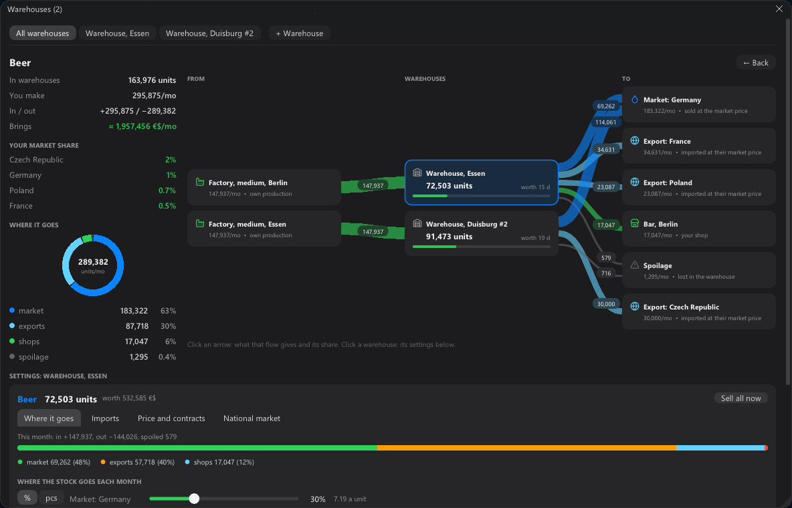
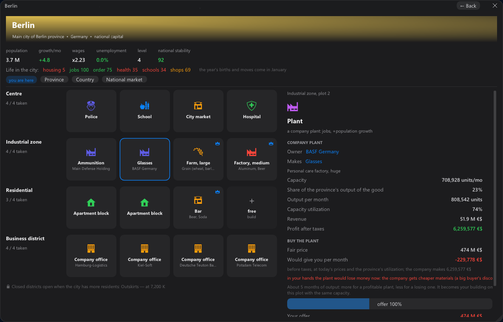

The most common feedback on beta 0.10 was: “if the game were on a real world map, I would buy it.” We turned the whole
project around. Update 0.11 is out now.
✚ The Earth of 2000 instead of the fictional world
✚ Magnates — the world's 300 richest people play by your rules
✚ An atlas map that rolls into a globe
✚ Warehouses with a flow scheme of every good
✚ A new interface and a glossary on hover
✚ Real countries, regions and cities with their populations and economies as of 1 January 2000
▲ Living countries: 17 → 150+ — all of Europe, both Americas, Asia, Africa, Oceania
✚ A real scale: people and markets as in 2000, your first plant is a drop in the ocean
✚ Poor but calm countries catch up with the rich: China and India get twice as rich in 25 years; a country at war or in turmoil stands still
✚ Blocs and alliances: the EU, NATO, the CIS, ASEAN, MERCOSUR, the CSTO, the GCC
✚ Distances and days on the road follow the globe; seasons in the southern hemisphere are half a year apart
✚ A city apart from its countryside: “city 1.1 M, with its area 7.3 M”

✚ An atlas in the spirit of Victoria 3: muted country colours, relief showing through, water by depth, groves
✚ From afar — an old paper map, zoomed out further — a globe
✚ Country names curve along their shapes; small countries in the same style
▼ Letters jumping in names while the camera moves: 6–13 → 0
✖ The map has no edge anymore: the Pacific runs right through
▲ The projection follows the zoom: true proportions from afar, shapes without stretching up close
▲ A close-up frame of the map: 23 → 7 ms

✚ The world's 300 richest people buy stakes, build blocking stakes, take control of companies and merge rivals
✚ They go into power your way: a sphere of influence, dues, governor, minister, successor
✚ They outbid your offers (with a loan against their stake) and back the raiders that come for your corporation
✚ They build plants against your goods once you hold a noticeable share of a market
▲ Company mergers in 20 years: 0 → 6–14
▲ Monopolists with a company of their own: 1–2 → 7–13
✚ The Rivals tab of the Goals window: who stands in your way and their last move

▼ The world's richest person after 20 years: 5–7 trillion → ~0.5 trillion
▼ The 100th richest after 20 years: 45 → 31 billion
▼ Countries where the richest person owns more than 30% of the yearly output: 16–17 → 2
⟳ A global firm sells abroad at most 8 of its home markets — Botswana no longer grows trillionaires
⟳ Companies pay their overheads: half of their plants' profit
⟳ Founders of giants keep about 10%, startups sell 40% at the IPO, big families sell down over the years
⟳ The world's people pay 13% on dividends and spend part of their wealth
⟳ A company takes over only a business it can run
✚ Export to several countries at once
✚ Any good opens as a flow scheme: from → warehouses → to; the thicker the arrow, the more units
✚ The market and every export country in percent or in units a month
✚ One plant's output split between warehouses (say 60/40)
✚ The production chain with the cost of every step, and “in / out / profit”
✚ Quick actions: cut the good, boost production, add sales

✚ Rivals of your size: people open their own shops and grow — “Petrov” → “Petrov & Sons” → “Petrov Market”
✚ Spin any part of your business — shops, plants, media, warehouses — off into a subsidiary with a director you pick from three
⟳ Retail chains earn from their shops in the cities, not from the whole country's market
⟳ Company names fit the real countries
✚ Dark glass, icons, summary cards — the main thing at a glance; tables stay for fine control
✚ A glossary on hover: point at a word or a number and the game tells you what it means
⟳ All windows follow one set of rules: cards, spacing, four type sizes, iOS-like sliders
⟳ A clearer first hour: labelled money, “—” instead of first-month zeros, an honest end of the tutorial chapter

✖ Every new game made the same world
✖ A bank swallowing banks of other countries grew to 7.8 trillion
✖ A new retail chain with one shop earned billions
✖ A subsidiary of three shops got a 200 million margin from the tender board
✖ A crash after the family's month
✖ A tear in the globe at the pole and a band over the Pacific
✖ Dark crater-like spots on the lakes of Tibet
⚠ Saves of beta 0.10 were made in the fictional world and do not load in 0.11 — the game tells you so plainly
✔ Saves of 0.11 will keep loading in the next versions
Tell us what you think in the comments. Found a bug? In the game, Game → Report a bug packs your save and the log into one archive.